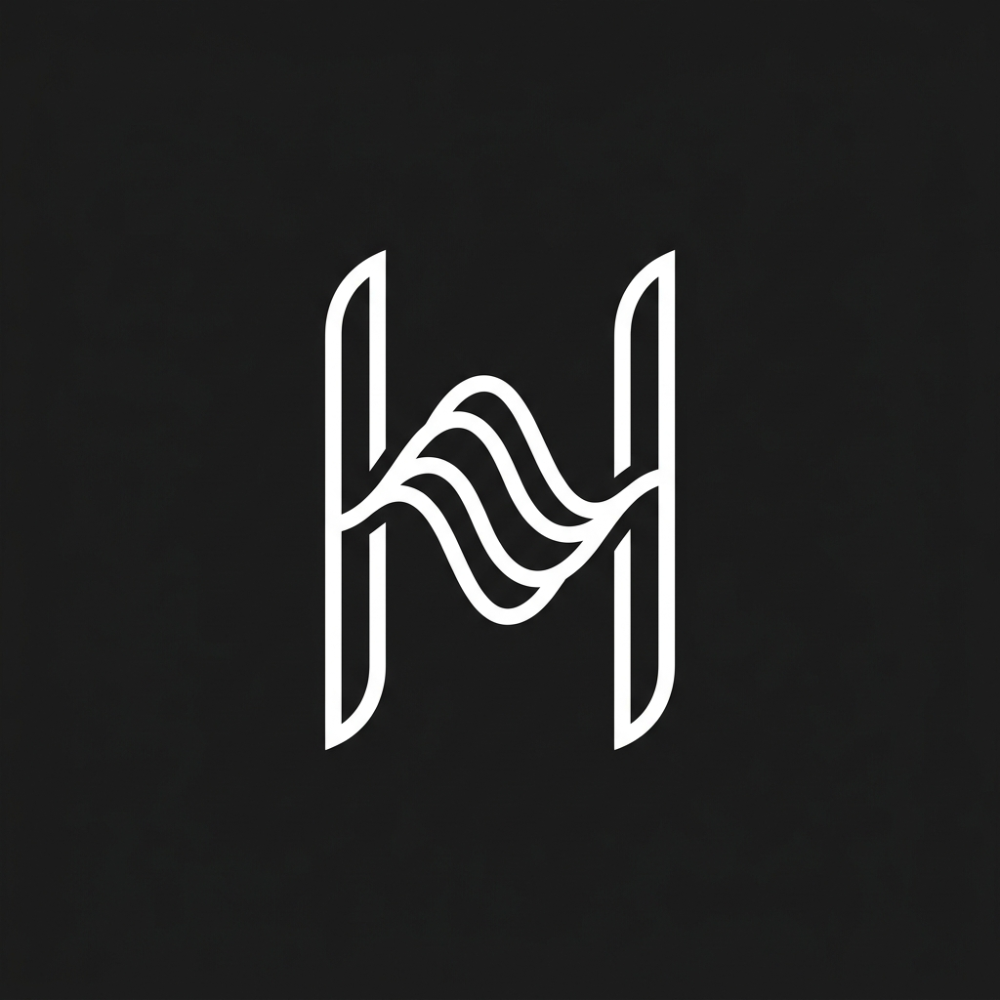

A zero-latency Linux DSP daemon engineered in Rust. Featuring hardware-accelerated Woodworth HRTF, real-time head tracking, and zero allocation architecture for the KZ Castor IEMs.
Calculates precise Inter-aural Time Delays (ITD) and Level Differences (ILD) using the Woodworth model. Creates a massive, out-of-head soundstage.
Integrates OpenCV and MediaPipe to track your head yaw via webcam. The audio stage stays anchored in physical space, mimicking Apple Vision Pro.
10-band zero-latency biquad PEQ. Fine-tune the KZ Castor's response with surgical precision before hitting the spatial processing engine.
A stack-allocated Feedback Delay Network adds hyper-realistic early reflections and late reverberation, simulating a massive physical acoustic space.
IEM-DSPD is a headless background daemon written in pure Rust. It hooks directly into the PipeWire audio server.
All DSP operations—including 10-band PEQ, crossfeed, HRTF convolution, and Reverb—are executed in a lock-free, zero-allocation real-time thread.
Configuration updates (like real-time head yaw from the Python tracker) are passed via Unix Domain Sockets and swapped atomically, ensuring zero dropouts.